Guan-Hua (Scott) Tu
Associate Professor
Department of Computer Science and Engineering,
Michigan State University
428 S SHAW LN, ROOM 3115
East Lansing, MI 48824-1266
Email: ghtu AT msu.edu
Office: 1124 Engineering Building
Mobile Data Charging Security
- Insecurity of Operational Cellular IoT Service: New Vulnerabilities, Attacks, and Countermeasures [MobiCom'21; IEEE/ACM ToN'24] (Paper)
- Cellular IoT PSM-unaware charging (Data accounting continues while an IoT device sleeps)
- Excess bill caused by the IoT data spamming attack ($226 charged with less than 120 MB of spam traffic)
- Identifying IoT phone numbers from VoLTE signaling (VoLTE call flows differ for IoT and non-IoT phone numbers)
- PSM-aware charging (Spam packets are blocked at the P-GW while IoT devices sleep)
- How Can IoT Services Pose New Security Threats In Operational Cellular Networks? [IEEE TMC'21] (Paper)
- IoT masquerading (A smartphone spoofs the IMEI of a smartwatch and is recognized by the carrier as an IoT device)
- Wearable IoT abuse (Turning a smartwatch into a mobile data gateway)
- 8-month evaluation of the IoT masquerading attack
- Accouting, Charging Issues, Security Attacks and Countermeasures on Mobile Data Networks [MOBICOM'12, CCS'12, MOBIYSY'13, CCS'14]
- We pay for what we never get (User is overcharged while signal strength gets worse)
- We pay nothing for what we get (Carriers does not charge DNS traffic (UDP:53) towards Internet at all)
- We pay for mobility (Pay for the packets dropped by carriers during mobility on 13 routes)
- Media report
More than 150 cellular networks worldwide have rolled out massive IoT services such as smart metering and environmental monitoring. Most massive IoT users demand only small data volumes, so carriers offer them service plans with small data volumes and low prices but much higher unit prices. For example, the cheapest monthly data plan from AT&T for a smartphone is $30 for 5 GB ($0.0059 per MB), whereas that for an IoT device is $0.99 for 0.5 MB ($1.98 per MB); an IoT user at Verizon also pays $0.05 for each text message sent or received. This makes cellular IoT devices attractive targets for data and text spamming attacks. Seemingly, such attacks are hard to launch, since carriers assign IoT devices IP addresses and phone numbers that are indistinguishable from those of smartphones. Unfortunately, we find that this defense can be broken. Studying the operational cellular IoT services of three major U.S. carriers, we uncover five vulnerabilities spanning standard design defects, network operation slips, and IoT device implementation flaws. For the data service, cellular IoT devices do not terminate ongoing TCP connections before sleeping, which allows an adversary to remotely identify their IP addresses (V1); moreover, the core network is unaware of the IoT power saving mode (PSM), so data accounting and charging are not suspended while an IoT device sleeps (V2). For the text service, the response times of VoLTE signaling leak whether a phone number belongs to an IoT device (V3), SMS signaling leaks the status of a phone number (V4), and carriers charge IoT users for incoming texts without protecting them against text spam (V5). By exploiting them, we devise two proof-of-concept attacks, data spamming and text spamming. An adversary can raise an IoT data bill by up to $226 with less than 120 MB of spam traffic and increase an IoT text bill at a rate of $5 per second; when auto-renewal is disabled, IoT devices may even suffer from denial of IoT service. We finally propose a suite of standard-compliant solutions, including PSM-aware charging and a privacy-aware voice service, and confirm their effectiveness through a prototype and evaluation. We reported the vulnerabilities and our recommended solutions to the affected carriers.
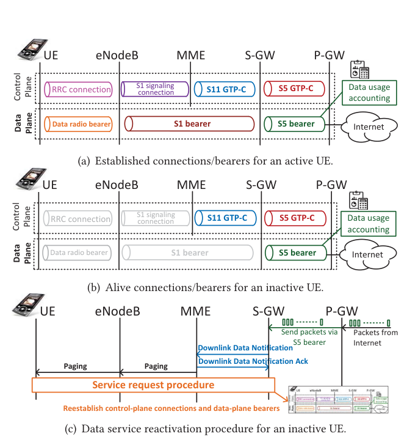
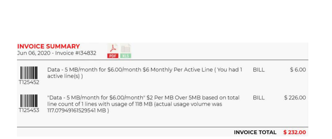
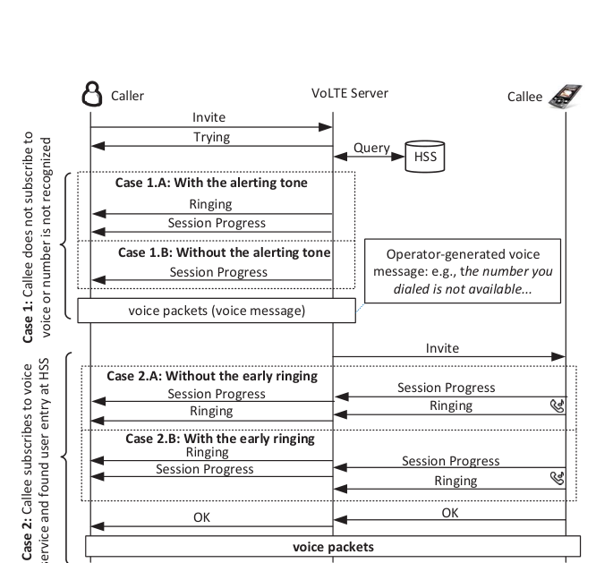
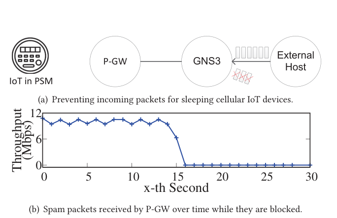
Compared with conventional devices such as smartphones and tablets, IoT devices have limited network capabilities (e.g., low rates) and specific use scenarios (e.g., inside vehicles only). Carriers therefore offer cheaper device access fees for IoT devices; for example, in AT&T's limited data plans, a user pays $10 for an IoT device and $20 for a smartphone. Will this new IoT service charging expose the cellular network ecosystem to emerging attack vectors? Unfortunately, the answer is yes. In this work, we conduct the first empirical security study on cellular IoT service charging over two major U.S. carriers. We discover four vulnerabilities: an IoT SIM card can be used in a non-IoT device (V1); the infrastructure cannot correctly distinguish IoT from non-IoT devices (V2); the infrastructure imposes no restrictions on IoT data services (V3); and the infrastructure cannot confine IoT devices to their pre-defined use scenarios (V4). They lead to two major security threats, IoT masquerading and IoT use scenario abuse. We devise three proof-of-concept attacks: IoT masquerading, which disguises a smartphone as an IoT device to obtain cheaper smartphone service, and wearable and car-connected IoT abuse, which turn IoT devices into cheaper mobile hotspots. An 8-month evaluation shows that adversaries can pay 43.75–80.00% less for cellular data services. We finally propose an anti-abuse service model, a standard-compliant solution that mitigates attack incentives by providing differential service quality for each cellular device based on its cellular technology category and device access fee, and confirm its effectiveness through a prototype and evaluation.
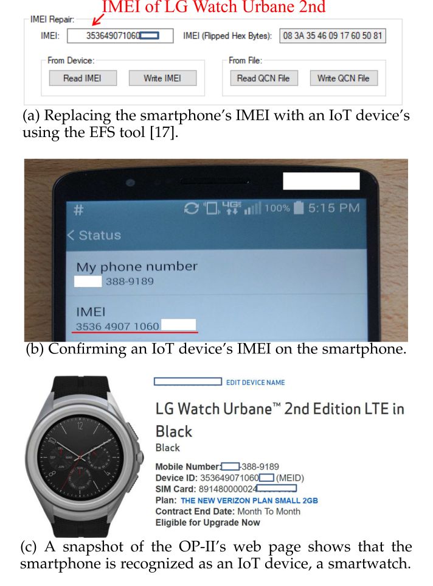
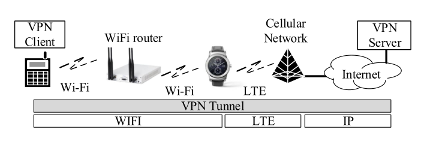
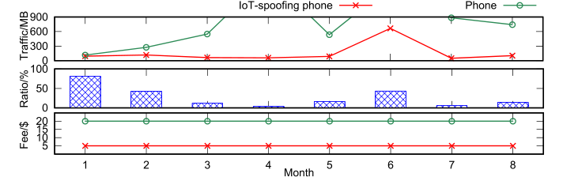
The accounting of data usage is the most important functionality in the management plane of cellular network. However, we find that the control-plane and management-plane functions of cellular network are not well designed from either charging accuracy or security aspect. In MOBICOM'12 and MOBISYS'13, our results yield three counter-intuitive findings: (1) we are charged for what we never receive in extreme case; (2) we can obtain what we want in data access free of charge; (3) we pay for the packets dropped by cellular network during user mobility cross different systems. We recognize that the fundamental problem is because the 3G/4G standards design a centralized network-element-based the accounting architecture. When things go wrong outside the charging elements, the resulting data volume deviates from what is observed at end devices. In CCS'12 and CCS'14, we discover several security vulnerabilities along improper coordination between control-plane and management-plane. First, the decoupling of authentication, authorization, and accounting of data service gives a great opportunity to attackers to send data packets which are spoofed with the fake source address, and the accounting element further charges the victim instead of the attacker. Second, mobile device cannot request the network to stop the malicious spamming packets have been accounted unless user tears down the bearer for all data services. We demonstrate that malicious attackers can incur any large traffic volume to the victim, while the victim may not be even aware of such spam traffic. Our contributions are to identify new security threat to cellular systems from the charging/accounting perspective and draw more people's attention to this important topic. Our research results have received several media reports including MIT review, Computer World, Fiscal Times, and TheVerge. Three major US operators adopt our approach to fix the free data service problem.
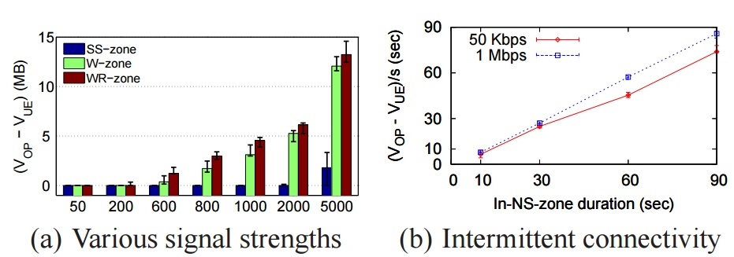
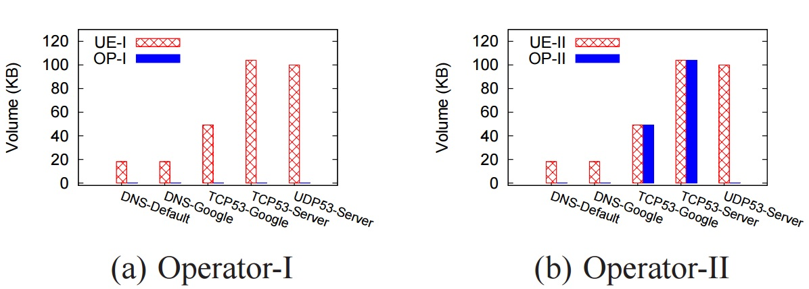
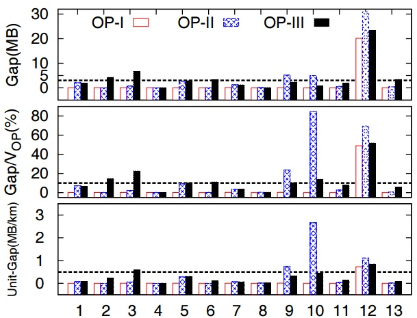
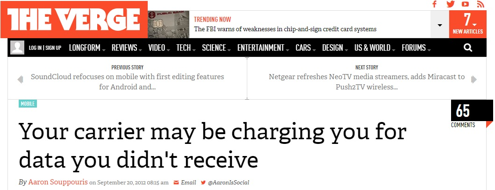